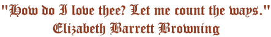

 Modern explorers of the heart include: Charlotte Bronte, Jane Austen, Victor Hugo, Emily Bronte, George Sand, William Makepeace Thackeray, Elizabeth Barrett Browning, and Leo Tolstoy. Do you know which author created each of these affecting compositions? Click on the book title to unmask the writer. |